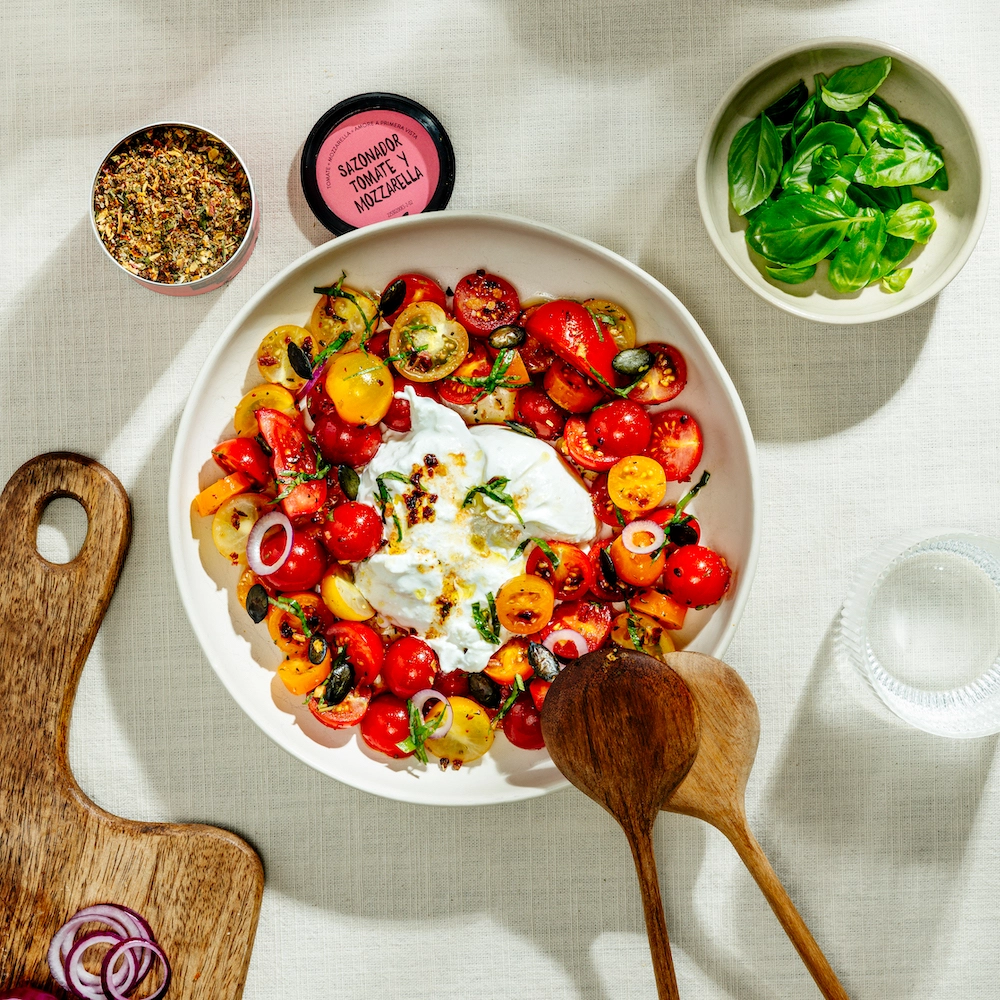

Ensalada de Tomate y Burrata

⏰
Tiempo total:
20 minutos
Ingredientes
- 500g de tomates cherry de colores
- 4 bolas de burrata (aprox. 125 g cada una)
- 1 cebolla roja
- 1 manojo de albahaca
- 3 cdas. de aceite de oliva
- 2 cdas. de vinagre balsámico
- 1 cdta. de miel
- sal y pimienta al gusto
Preparación
-
1.
Lava los tomates y córtalos en trozos del tamaño de un bocado.
-
2.
Pela la cebolla roja y córtala en aros finos.
-
3.
Lava la albahaca, sécala y arranca las hojas.
-
4.
Mezcla el aceite de oliva, el vinagre balsámico y la miel en un bol pequeño. Sazona con el Sazonador Tomate y Mozzarella, y sal y pimienta al gusto.
-
5.
Mezcla los tomates, los aros de cebolla y la albahaca en un bol grande.
-
6.
Vierte el aliño sobre la ensalada y mezcla bien.
-
7.
Dispón la ensalada en cuatro platos y coloca una bola de burrata en cada plato y córtala por la mitad para que se vea el centro cremoso.
Autor: Nils
Recetas